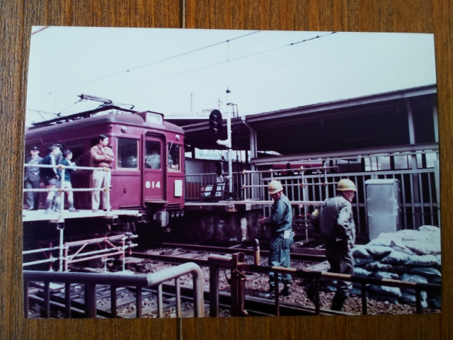

西宮北口のダイヤモンドクロスの廃止です。今でも、ダイヤモンドクロスを通過する列車のジョイント音は鮮明に覚えていま
す。
昭和５７年４月７日 西宮北口駅
ダイヤモンドクロスのなくなる２年前ですね。
今津線の宝塚行の先頭から見た、ダイヤモンドクロス越しの今津線のホー
ムです。
これが有名な脱線ポイントですね。
神戸線の梅田行のホームの梅田よりから撮ってます。
今津から来た宝塚行の１０００系が通過します。非
冷房の１０００系のサイドビューはいいっすね。
三宮行のホームに移って、宝塚から来た今津行の８
１０系。
再び梅田行のホームに移って、今津から来た宝塚行の８１０系。
このクロスの地下あたりには、各ホームに行く薄暗い地下道があって、子
供の頃は、迷ったら２度と出られへん気がして必死に親に付いていった思
があります。なんで大人は迷わずに行けるのか、不思議でしゃーなかった
わ。
昭和５９年１月２５日 西宮北口駅
とメモには書いてるけど、ダイヤモンドクロスがな
くなったのは３月２５日です。メモのミスかな？服
装も１月末というより３月って感じかな。
見ての通り、ダイヤモンドクロス廃止直後の様子で
す。

やっぱ８１０系はええわ。
人がたかってます。みんな興味深々ですね。
分断されてしまった、今津線の南側。
まさかここが高架になるとは思いもよりませんでし
た。
どこから撮ったのか、まだ神戸線のホームは上下別
れた状態やったと思います。
多分、三宮行のホームからと思います。